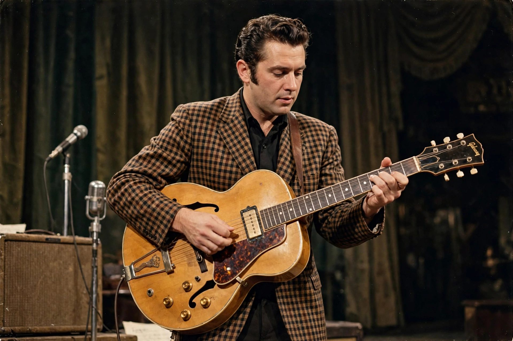

Rock and roll
From Wikipedia, the free encyclopedia

Rock and roll is a genre of popular music that evolved in the United States during the late 1940s and early 1950s, blending rhythm and blues, country, gospel and boogie-woogie into a backbeat-driven sound centred on the electric guitar. Pioneered by artists including Chuck Berry, Little Richard, Elvis Presley, Buddy Holly and Sister Rosetta Tharpe, it became the sound of youth culture worldwide and the root of Rock music in all its forms.
Origins
The ingredients assembled through the 1940s: jump blues (Louis Jordan), electric blues (Muddy Waters in Chicago), country boogie, and gospel's fervour. 'Rocket 88' (1951, Jackie Brenston with Ike Turner's band) is a common candidate for 'first rock and roll record'; Alan Freed's broadcasts popularised the term. Berry codified the guitar-led form and the teenage lyric; Presley made the fusion — Black music carried by a white singer — a mass phenomenon, with all the credit and appropriation arguments that implies.
Spread and transformation
Rock and roll detonated globally (the British Invasion repaid the debt with interest), diversified into rock's subgenres, and left permanent marks on fashion, film, sexuality and the very concept of youth. The Rock and Roll Hall of Fame (Cleveland, chosen 1986) institutionalises a canon still debated — its induction rows a yearly referendum on the genre's boundaries.